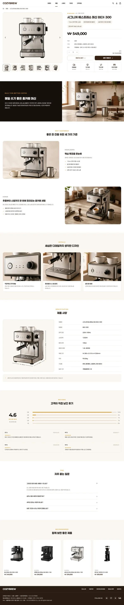
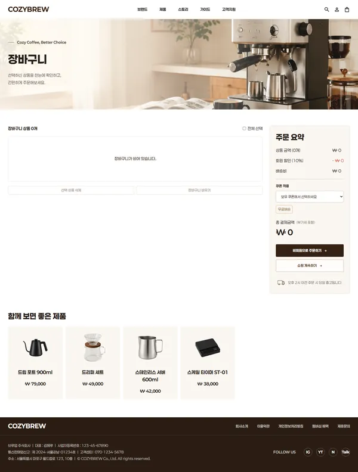
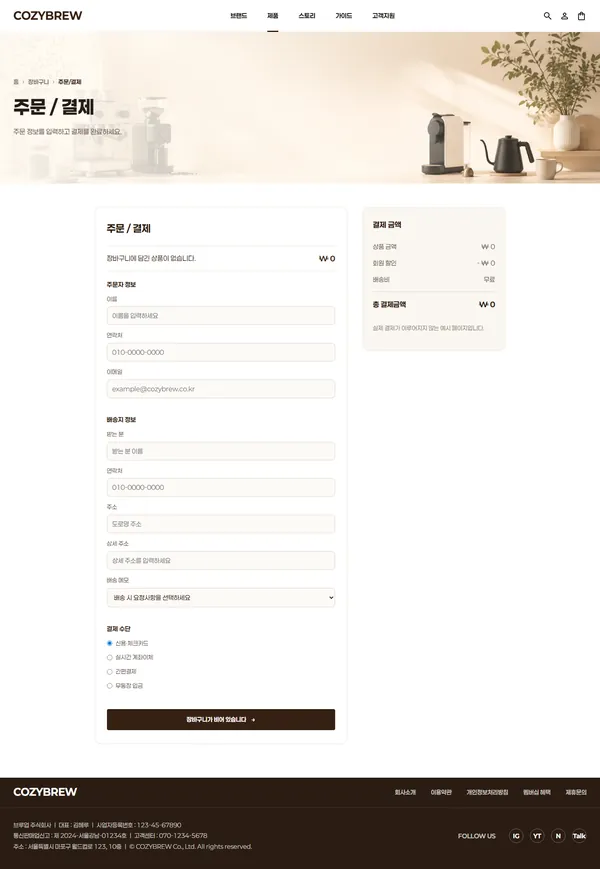

01Overview
집에서 완성하는 한 잔의 여유
원두·머신·굿즈를 아우르는 커피 브랜드의 풀 이커머스 경험을 HTML·CSS·JavaScript로 구현했습니다. 브랜드 철학·쇼룸·제품 상세·장바구니·마이페이지·브루잉 가이드까지 다양한 페이지를 하나의 톤으로 설계했습니다.
따뜻한 우드·크림 톤과 여백을 활용해, 제품보다 공간과 경험이 먼저 느껴지도록 아트디렉션했습니다.
02Problem & Goal
왜 이렇게 만들었나
단순히 제품을 나열하는 쇼핑몰이 아니라, 브랜드 무드와 구매 흐름을 함께 고려한 홈카페 쇼핑몰을 목표로 설계 방향을 먼저 정리했습니다.
03Design Guide
디자인 가이드
따뜻한 홈카페 무드를 일관되게 전달하기 위해 키워드부터 컬러·타이포·컴포넌트까지 규칙을 먼저 정의하고 전 페이지에 반복 적용했습니다.
따뜻한 홈카페 분위기를 전달하기 위해 cozy · warm · minimal을 중심 키워드로 설정하고, 모든 화면의 톤과 여백 기준으로 삼았습니다.
크림 베이스에 브라운·에스프레소 포인트를 더해 차분하고 편안한 홈카페 무드를 구성했습니다. 제품 이미지가 주인공이 되도록 배경은 낮은 채도로 유지했습니다.
#F6F0E7
#FBF7F0
#A9683A
#7A4A2B
#241C15
굵은 타이틀과 읽기 쉬운 산세리프 본문을 조합해, 브랜드명은 강하게 · 상품 정보는 명확하게 보이도록 구성했습니다.
둥근 카드, 브라운 CTA 버튼, 얇은 라인 구분과 태그를 반복 사용해 쇼핑몰 전체의 통일감을 유지했습니다.
04Screens & Flow
화면 구성 · 흐름
메인 내비게이션 5개 탭 및 상품 상세·장바구니·주문·마이페이지·가이드까지 총 36개 화면을 설계·제작했습니다. 아래는 핵심 화면 흐름입니다.



05Build
구현 포인트
다중 페이지 이커머스
브랜드·제품·상세·장바구니·주문·마이페이지까지 36개 화면을 하나의 구조로 연결해 쇼핑 전체 흐름을 구성.
반응형 레이아웃
CSS Grid·Flexbox와 미디어쿼리로 PC·모바일 네비게이션과 레이아웃을 직접 대응.
장바구니 상태 관리
localStorage에 장바구니 데이터를 저장해, 페이지를 이동해도 선택 상품과 수량이 유지되도록 구현.
스크롤 인터랙션
GSAP ScrollTrigger로 섹션별 스크롤 연동 모션을 구현해 브랜드 스토리에 몰입감을 부여.
06Challenges
막혔던 부분 · 해결
PROBLEM36개 페이지에서 로그인·장바구니를 어떻게 일관되게 유지할까?
해결 → localStorage 중심 상태관리(site.js 2,382줄)로 페이지 전역에서 동일한 로그인·장바구니 상태를 유지했습니다.
PROBLEM옵션·수량마다 결제 금액이 달라진다.
해결 → 수량·할인·배송비를 실시간 계산해 장바구니와 결제 화면에 즉시 반영되도록 구현했습니다.
PROBLEM브랜드 스토리를 단조롭지 않게 보여주고 싶다.
해결 → GSAP·ScrollTrigger로 스크롤 연동 모션을 직접 구현해 몰입감을 더했습니다.
07Results
숫자로 보는 작업
—Review
배운 점
반응형 레이아웃과 장바구니 데이터 흐름을 직접 구현하며, 페이지 간 상태 관리의 중요성을 배웠습니다.
아쉬운 점
실제 결제 연동이나 관리자 상품 등록 기능까지 확장하지 못한 점이 아쉽습니다.
개선 방향
추후 상품 필터·검색·리뷰 기능을 더해 실제 쇼핑몰에 가까운 구조로 발전시키고 싶습니다.
반응형 레이아웃과 장바구니 데이터 흐름을 직접 구현하며, 다중 페이지 간 상태 관리의 중요성을 체감한 프로젝트였습니다.